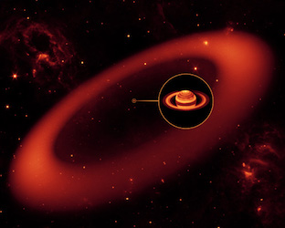

RIP Spitzer: NASA bids an emotional farewell to its infrared space telescope
- NASA scientists have declared the mission of the Spitzer space telescope over after 16 years of service
- NASA mission control downloaded the last Spitzer data and sent through a command to enter safe mode on Thursday, ceasing all scientific operations.
- At 2:34 pm PST (10:24pm GMT) on Thursday, Spitzer Project Manager Joseph Hunt declared the spacecraft officially decommissioned, bringing its mission to an end.
- The telescope, which focused on capturing infrared images, launched in 2003 and was operational for 16-and-a-half years, despite only being planned to serve for five.
At 2:34 pm PST on Jan. 30, 2020, Spitzer Project Manager Joseph Hunt declared the Spitzer spacecraft decommissioned.
— NASA Spitzer (@NASAspitzer) January 30, 2020
Farewell, Spitzer. Thank you for the great science. 👋#SpitzerFinalVoyagehttps://t.co/o1J0vNp2dt - The legendary infrared space telescope was placed in safe mode on Thursday, ceasing all science operations
- Since its launch in 2003 it discovered Saturn's largest ring and discovered planets beyond our Solar System

- The spacecraft's most memorable achievements include the discovery of Saturn's largest ring and four TRAPPIST-1 exoplanets, as well as mapping the extensive portraits of the Milky Way. Among its contributions over 16 years, Spitzer studied comets and asteroids in our Solar System and found a previously unidentified ring around Saturn in 2009 – the planet's largest.
- Spitzer was one of four Great Observatories telescopes released between 1990-2003 to study the universe in by capturing different waves of light
- The Great Observatories program demonstrated the power of using different wavelengths of light to create a fuller picture of the universe, NASA said.
- Satellite light readings can allow scientists to discern the mass and size of stars in other galaxies and their planets that pass in front of them.